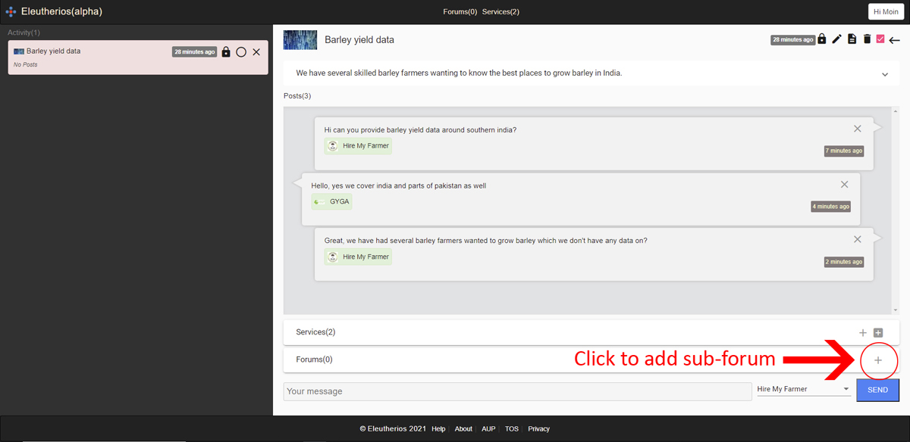

Eleutherios is a digital, sociopolitical or economic system or value chain, that enables humankind (service providers) to cooperate with one another at scale, through the same forum or network.
It does this by scaling the customer request or forum horizontally, enabling service providers to create a sub-forum, that other service providers can join.
There are many benefits in this way of communicating, but the main benefit is that data or information can be shared with other service providers, that are involved in the conversation.
Our current analogue, sociopolitical or economic system or value chain does the opposite. Where customer requests don't scale or are separate from one.
Service providers are unable to join the request or network. Therefore data or information can't be shared or is hidden from one another.
In this example Hire My Farmer wants to use the Barley yield data, that they're getting from GYGA to share with another service provider.
They can click on the plus button to create a sub-forum in the Barley yield data forum and include the service provider they want to share the data with.

Service providers can navigate their way through the conversation using a virtual breadcrumb.

The current version of Eleutherios provides basic tooling such as creating a forum, creating a sub-forum, creating a service, searching for forums or services, and purchasing services.
Overtime Eleutherios will introduce a governance layer to enable service providers to be able to create and share policies with one another.
A service layer to enable businesses to communicate with their backend and a data layer to enable businesses to store and retrieve data.
Current features:
- Tags for filtering forums or services
- Forum in forum
- Blocking to prevent unwanted services or users from serving in forums, they have been asked not to serve in or for requesting services, they have been asked not to request
- Service ratings/reviews
- B2B Payments
Contribute
Help fix bugs or resolve issues.
https://github.com/aletheon/eleutherios-website/issues
Make a donation to the Eleutherios open source project.